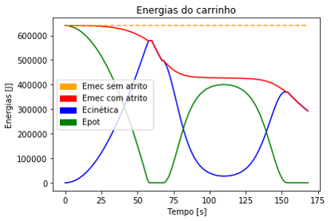

Modelagem e Simulação do Mundo Físico - Professor Fábio H.
O foco do último projeto desta matéria foi a modelagem de sistemas mecânicos – “mecânicos” no sentido comumente utilizado na física, ou seja, o estudo do movimento de corpos macroscópicos. Mais uma vez, o modelo seria utilizado para algum tipo de análise (ou seja, para responder a uma pergunta explicativa, preditiva ou de parametrização do sistema escolhido). Ao final, seria realizada uma apresentação em slides ou em cartaz.
Amada por uns e temida por outros, a montanha russa é uma atração muito comum em parques de diversões. No projeto, admitiu-se uma a qual sua trajeória é no início uma queda e depois um looping. Como simplificação, admitiu-se a queda como uma reta e o looping como uma circunferência. A paritir disso, decidiu-se analisar o efeito da variação tanto da altura da queda quanto do raio do looping.

A partir do modelo, equações e gráficos obtidos, foi possível analisar para o comportamneto da montanha russa com a variação da altura da queda e do raio do looping tanto considerando forças dissipativas, quanto não, percebendo-se que há uma grande diferênça entre os resultados, o que mostra como o atrito tem uma grande importância nessa caso.

Além disso, classificou-se o tipo de comportamento do carrinho da montanha russa em três:
Desse modo, notou-se que, quanto maior o raio do looping, maior a altura de queda necessária para que o carrinho complete o looping.
Voltar